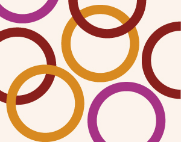

Advanced Clown with Rodrigo Malbrán VERDAL
- Dato:
- 22.09.2012 til 26.09.2012
- Start kl :
- 10:00
- Slutt kl :
- 16:00
- Pris:
- 500,-
- Adresse:
- , VERDAL
 Rodrigo Malbran var initiativtaker for og etablerer av La Mancha teaterkompani og teaterskolen La Mancha i Chiles hovedstad, Santiago. Han er utdannet ved Ecole Jaques Lecoq, først som teaterkunstner med 2 års utdanning, så også som pedagog med en 1 årig utdanning.
{kind=link}
Etter flere års arbeid i Europa i land som Spania, Hellas og England, reiste han til Chile for å gjennomføre sin visjon om å utvikle en skole og et teaterkompani i tradisjon med Lecoqs arbeid. Skolen og kompaniet har gjennom 20 års praksis utviklet klovnens univers og ståsted videre inn i subtilt skuespillerarbeid, og Rodrigo har tatt denne kunnskapen med til andre deler av Latin-Amerika til land som Colombia, Cuba og Argentina. Han holder jevnlig videreutviklingskurs for klovn og han har laget flere helaftens forestillinger basert på klovn.
Workshopen vil foregå på engelsk.
The Advanced Clown workshop is addressed to people who already have some pedagogical or professional experience within the style. The main purpose is to deepen, develop and expand the knowledge of your own clown, the psychology and asymmetry that characterizes any clown, together with developing a visualization of the vast dramatic aspects of a clown in a completely dramaturgic level.
WORKING METHODS
Movement Analysis:
Each participant will learn to work the bone asymmetry of the clown, the different rhythms, gestures and attitudes in order to clarify with greater precision his/her eccentricities and capacity to express them both in the individual as well as in the collective field.
The workshop will be divided into three fundamental fields:
1. Individual Improvisation
Each participant will work with individual improvisation that will help each student to understand the “acting” and the “reacting of the individual-personal clown of each actor.
Somatically they will understand in which moments one acts out one’s clown and in which moments one plays out one’s clown.
2. Collective/Group Improvisation
Collective or Group Improvisation will be taught in order to level in all kinds of social relations possible to create between Clowns and the particular situations they can generate.
3. Improvement of Work
Students will be guided through their elaborated work or any work that is under development, helping them in each stage to deepen in the immensely diverse and poetic drama of the Clown and in some cases, even with an abstract touch.
LESSON PROCEDURE
The class will take place in the following way:
First Hour
Exercises for Body Heating
Second Hour
Individual Improvisation
Third Hour
Exercises of Rhythm Analysis, of the gesture and the asymmetric gesture of the clown.
Fourth Hour
Group/Collective Improvisation.
Deepening in the Social Relations and the Decision Taking of the Clown.
Fifth Hour
Improvement of Works
Workshopen arrangeres i samarbeid med HiNT og Festival for visuelt teater ved Nord Trøndelag Teater.